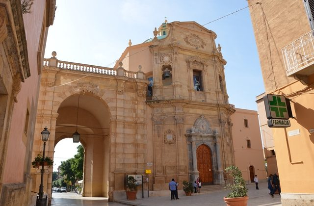
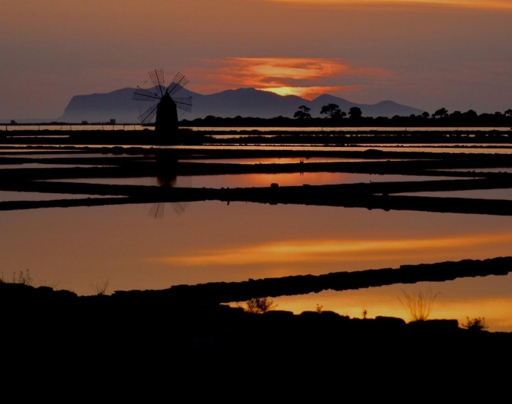

Ci uniremo in matrimonio presso il Santuario Maria Ss Addolorata di Marsala alle ore 15:30. Un luogo ricco di storia e bellezza, perfetto per celebrare il nostro giorno speciale insieme a voi.

Il Ricevimento
Dopo la cerimonia, vi aspettiamo per festeggiare alla Villa Favorita, una delle ville storiche più belle della Sicilia, circondata da un magnifico parco con palme, agrumi e alberi secolari.
Scopri Marsala e dintorni
Approfittate del weekend per esplorare le meraviglie della città:
Centro Storico: stradine affascinanti, chiese e palazzi antichi.
Le Cantine: degustazioni dei famosi vini delle cantine Marsalesi.
Lo Stagnone: saline, mulini a vento e l’isola di Mozia.
Spiagge: relax al mare e tramonti indimenticabili.
Isole Egadi: un arcipelago incantato al largo della costa occidentale della Sicilia, formato da tre isole principali: Favignana, Levanzo e Marettimo, facilmente raggiungibile da Marsala.
Erice: uno dei borghi più affascinanti e suggestivi della Sicilia, sospeso quasi tra cielo e mare.
Riserva dello Zingaro: uno dei tesori naturalistici più preziosi della Sicilia, un tratto di costa incontaminata tra Scopello e San Vito Lo Capo.

Ristoranti e Locali Consigliati
Durante il vostro soggiorno a Marsala, vi consigliamo alcuni luoghi speciali dove mangiare bene o godervi un ottimo aperitivo:
🍽️ Dove Mangiare
Parrinello - Pescheria e Cucina – Pesce freschissimo e cucina marinara autentica.
O' Scià Ristorante – Piatti tradizionali rivisitati in chiave moderna.
Osteria Il Gallo e l’Innamorata – Atmosfera romantica con vista sul mare.
🍸 Aperitivo o Dopocena
Mamma Caura – Cocktail con vista mozzafiato sulle saline al tramonto.
Anita Lounge Bar – Musica dal vivo e drink creativi in pieno centro.
Antico Mercato – Spazio storico con cibo, vino e musica.
Peola Stagnone – Aperitivi rilassati sul mare al tramonto.
Info Utili
Per chi arriva da fuori città, consigliamo di prenotare per tempo. Se avete bisogno di aiuto per l’organizzazione del viaggio o per i dettagli sul soggiorno, contattateci! Valeria 3290871978; Daniele 3468114966